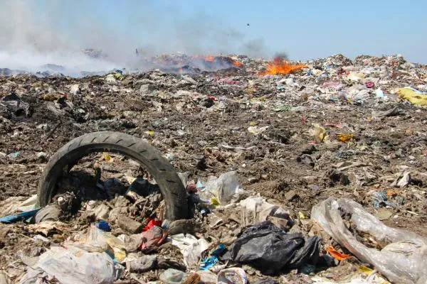

Consecuencias de la contaminación
La contaminación del medio ambiente tiene diversas consecuencias negativas en la salud humana, los ecosistemas y el planeta en general. A continuación, se presentan algunas de las principales consecuencias de la contaminación del medio ambiente:

Impacto en la salud: La contaminación ambiental contribuye a la aparición de enfermedades respiratorias, cardiovasculares y cáncer, entre otras. Según la Organización Mundial de la Salud (OMS), más de 1 de cada 4 muertes de niños menores de 5 años se deben a ambientes insalubres. Además, la contaminación del agua puede causar enfermedades transmitidas por el agua, como diarrea y cólera
.
Deterioro de los ecosistemas: La contaminación del medio ambiente afecta negativamente a los ecosistemas terrestres y acuáticos. Puede causar la pérdida de biodiversidad, la degradación de los hábitats naturales y la disminución de la calidad del agua y del suelo .
Cambio climático: La contaminación del medio ambiente, especialmente la emisión de gases de efecto invernadero, contribuye al cambio climático. Esto provoca un aumento de la temperatura global, el derretimiento de los glaciares, el aumento del nivel del mar y eventos climáticos extremos como sequías e inundaciones .
Contaminación del agua: La contaminación del agua tiene graves consecuencias para los ecosistemas acuáticos y la salud humana. Puede causar la muerte de peces y otras especies acuáticas, la degradación de los ecosistemas acuáticos y la contaminación del agua potable, lo que pone en riesgo la salud de las personas .
Contaminación del aire: La contaminación del aire afecta tanto al medio ambiente como a la salud humana. Puede causar problemas respiratorios, enfermedades cardiovasculares y daños en los cultivos. Además, contribuye al calentamiento global y al agotamiento de la capa de ozono .